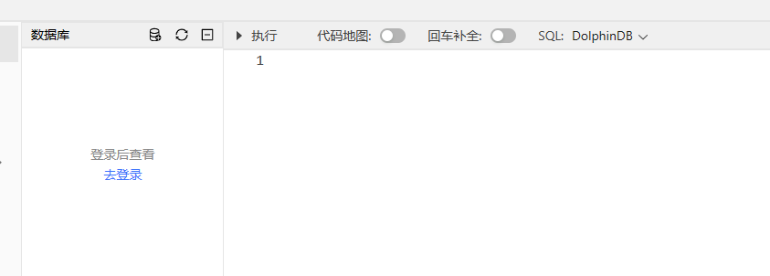
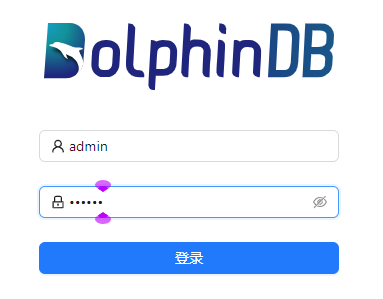

快速部署
以下内容介绍如何快速部署 DolphinDB，以及如何使用 WEB 客户端。
注： 为简便部署以及快速上手，以下步骤均以社区版服务器为运行前提。
- 前往 DolphinDB 官网 下载社区版本的 DolphinDB Server
压缩包。

- 将 DolphinDB Server 压缩包解压到本地目录。
- 单节点部署。进入\server\目录直接启动执行文件即可。以下是不同系统的启动指令示例：
- Linux
系统后台运行：
sh startSingle.sh
- Windows 系统：在 Windows 环境中，双击
dolphindb.exe。弹出如下窗口表示启动成功。

注： 系统默认端口号为 8848，如需自定义端口，请编辑同级目录下的配置文件 dolphindb.cfg，并修改 localSite 配置项。 - Linux
系统后台运行：
- 登录 Web 客户端。
- 打开一个主流浏览器。注： 使用 Web 集群管理器前，请确保浏览器版本满足以下要求：
- Chrome/Firefox/Edge 浏览器：版本高于 100
- Safari 浏览器：版本高于 16
- 在浏览器地址栏中输入 <ip>:<port>，即
DolphinDB 所在服务器的 IP 和端口号 8848。例如，通过 Web
访问在本机部署的单节点服务器的地址为：
http://localhost:8848
- 打开一个主流浏览器。
注： 未进行用户登录时，用户仅可以直接执行部分不需要权限的函数和脚本。对于需要权限的功能，例如创建数据库、创建表、管理作业、查看日志、查到当前脚本变量、查看运行结果或报错信息等，必须用户登录后方可使用。
WEB 中用户登录
- 点击 WEB 客户端左侧靠上区域的 去登录。
- 在随后显示的登录界面中输入 用户名 和 密码 后点击
登录。
提示： 初次使用 DolphinDB 时，请通过默认的管理员账号和密码登录：admin/123456。
其他客户端
Web 客户端具有上手快速、简单易用的特点，但与同样具备图形界面的 DolphinDB GUI 客户端相比，功能较为单一。对于具有深度编程需求的用户，则建议使用 DolphinDB VS Code 插件。